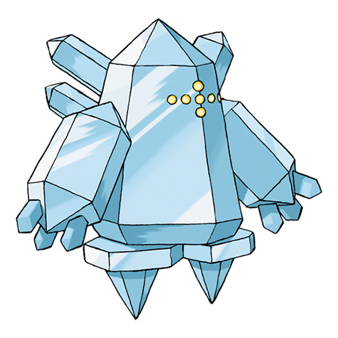
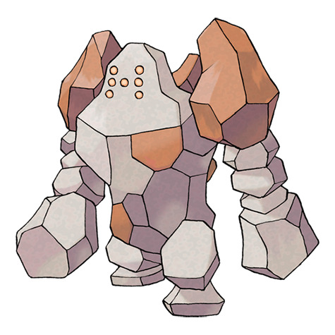
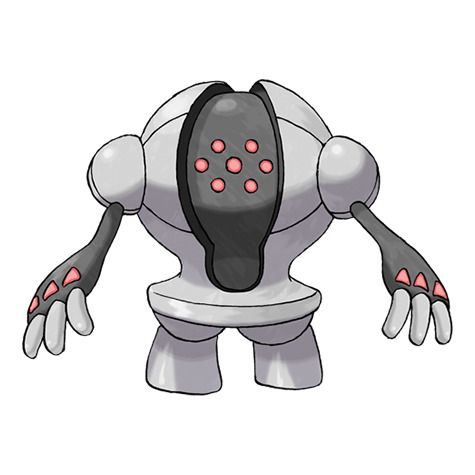

Todo su cuerpo está compuesto de hielo. Se dice que surgió bajo una gruesa placa de hielo durante alguna glaciación.

Todo su cuerpo está hecho de roca. Si alguna parte se erosiona, la recompone con más rocas.

Dicen que se formó en el manto terrestre y ascendió a la superficie hace aproximadamente diez mil años.